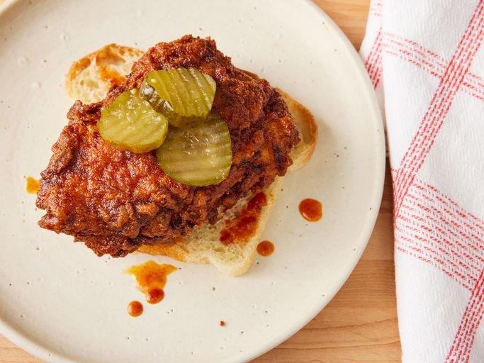

Nashville Hot Chicken
Return Home

Description
This Nashville Hot Chicken recipe will blow your socks off! This chicken is a perfect blend of
sweet, spicy, and tangy, encorporating the classic elements of Nashville Hot Chicken. Eat it on
it's own, on top of a slice of bread, or my favorite, make it into a sandwich on a brioche bun!
Ingredients
- 4 chicken breasts, halved into thinner pieces
Marinade:
- 1 cup buttermilk
- 1/4 cup pickle brine
- 2 tbsp Louisiana-style hot sauce
- 1 Large egg
Flour:
- 2 cups all purpose flour
- 2 tsp table salt
Sauce:
- 1/4 cup butter
- 1/4 cup lard (substitute for butter if you do not have this)
- 2 tbsp cayenne pepper
- 1 tbsp light brown sugar
- 1 tsp paprika
- 1/2 tsp garlic powder
- 1/2 tsp kosher salt
- 1/2 tsp ground black pepper
- 1 cup of preferred frying oil
Directions
- Arrange chicken in a large bowl
- Whisk buttermilk, pickle brine, hot sauce, and egg together.
Pour marinade over chicken and stir, ensuring each piece is coated.
Cover and let chicken marinate for 2 to 4 hours.
- Mix flour and salt together in a shallow, flat dish.
Remove chicken from marinade and blot with paper towels. Reserve marinade.
Toss chicken in flour until thoroughly coated. Return chicken to marinade,
coating all sides. Remove chicken from marinade allowing excess to drip back into
bowl and once again coat the chicken in the flour mixture. Place on a rack.
Allow to sit out about 15 to allow coating to dry out.
- Place butter and lard in a large pot. Add cayenne pepper, brown
sugar, paprika, garlic powder, kosher salt, and black pepper. Place
over medium-high heat. Cook and stir until fat melts. Remove from
heat; keep sauce warm.
- Fill cast iron skilled about 1/3 of the way with frying oil and
heat to 350F over medium-high heat. Carefully place chicken into
hot oil. Maintain an oil temperature of 325F during cooking. Fry until
instant read thermometer reads 160F, 8 to 10 minutes per side.
- Transfer chicken to a rack to drain. Brush with sauce on both sides.
- Enjoy!